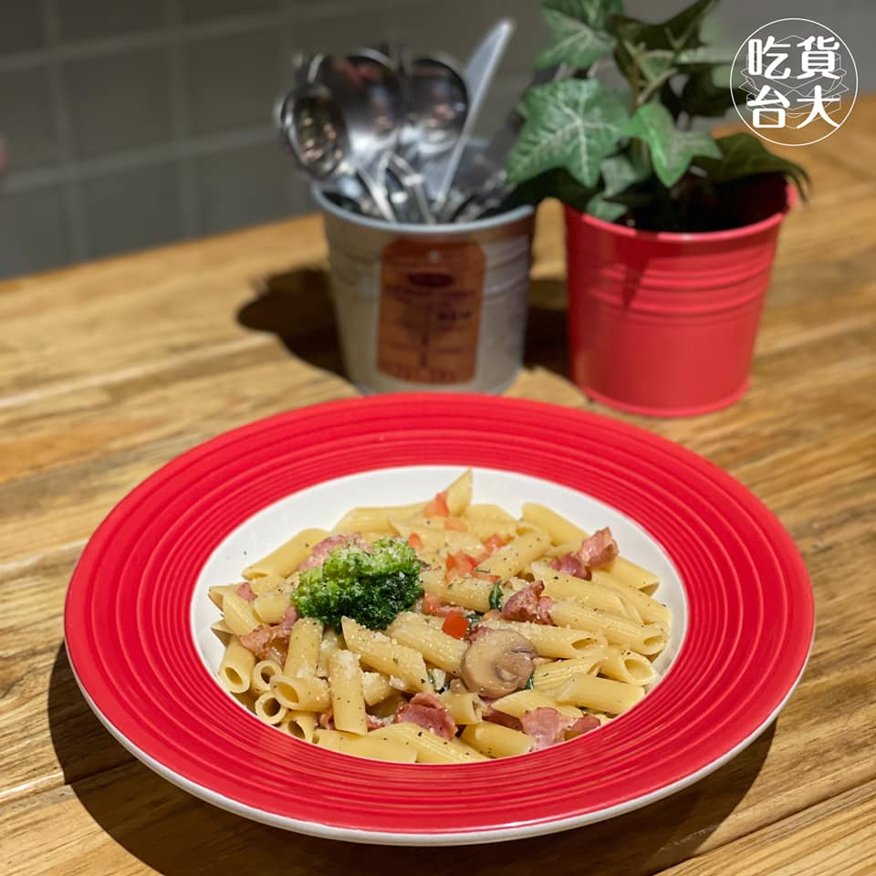
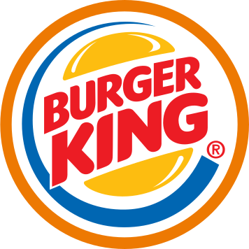

Ville Cafe位於校門前公館商圈，販售各式各樣的早午餐、義大利麵/飯。店內的菜單有重新調整過，價格變得經濟實惠，再加上用餐環境舒適且不限時，是聚餐的好地點～店裡的裝潢擺飾都是由老闆親自設計，所有餐點都能夠以50元以內加購飲品或開胃小點，目前週一至週五憑學生證還有主餐九折優惠！小編們都覺得CP值非常高😍

下課吃西式的！

Ville Cafe
微笑廚房洋食館
微笑廚房是後門學生下課後想吃義大利麵的口袋名單，價位大約落在130-200之間，有提供麵包、湯品、無限供應的飲料及冰淇淋，加上義大利麵的品質也不錯，值得讓小編推薦。/一句話形容：「118巷弄中的義大利麵好選擇！」
#吃貨台大美食分區_後門118
#今天下課隨便揪_一般吃飯的好選擇


Barkers
Barkers是位在118巷中的一間很有節慶感的美式餐廳，店面不大，一不小心就會錯過XD 主打餐點有漢堡、披薩和義大利麵等。只要點任一套餐就能飲料喝到飽，點漢堡類的會附上沙拉or美式薯條。店內大約可以容納40-50個人，不過用餐時間還是經常客滿，建議大家如果想在中午時段來用餐的話可以先訂位，以免久候！
So Free Pizza
遠遠在巷子的一頭就可以辨認出來了，整體的風格在整排的公寓中顯得格外搶眼。映入眼簾的是巨大的烤窯，以及還沒窯烤正在被按摩著的披薩餅皮。用餐區在烤窯的背後，門後是充滿北歐鄉村感的環境，桌椅都是實木製成，暖黃的燈光撒在大片的桌上。位置不少，可以容納不少人，適合好友間的閒聊聚會。


淬鍊廚房
淬煉廚房是公館商圈的一家披薩店，店內販售的都是9吋的披薩，一個人吃剛剛好，而且價格很實在，每種口味都落在99-130元之間。除了一般常見的口味之外也有供應甜的披薩，店員的服務態度也很親切，唯一可惜的就是店面空間小了一點，裡面大約只有5、6個座位，然後因為披薩都是現做現烤的，所以可能會需要等候一些時間。
麥當勞
麥當勞是全世界最大的快速餐飲服務餐廳領導品牌。 1955年，世界第一家麥當勞由創始人Ray A. Kroc在美國芝加哥Elk Grove Village成立，黃金拱門下的美味漢堡和親切服務，立刻受到各界人士的歡迎！ 現在，全球有約38,000家餐廳，遍及超過100個國家地區，為顧客提供超值美味的麥當勞餐飲。


肯德基
肯德基（英語：KFC，原是「Kentucky Fried Chicken」的縮寫，意為肯塔基炸雞）是源自美國的快餐連鎖店，總部設於肯塔基州路易維爾市，以炸雞為主力產品。 總體來說是全球第二大的餐飲連鎖企業（按銷售額計算），僅次於麥當勞，截至2015年12月，在123個國家和地區擁有20,000+個分店。
漢堡王
漢堡王公司簡介 1954年，詹姆士·麥克拉摩(James Mclamire)及大衛·艾傑敦(David Edgerton)在美國佛羅里達州邁阿密共同經營創設第一家“漢堡王”(Burger King)餐廳。
兩位“漢堡王”創辦人始終抱持著要提供給顧客合理的價格、高品質的產品、快速的服務以及乾凈的環境的理念。
